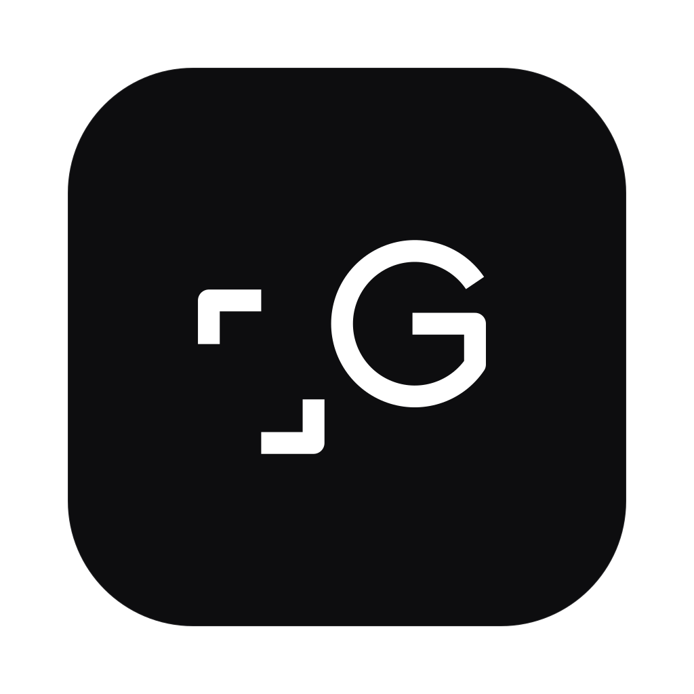
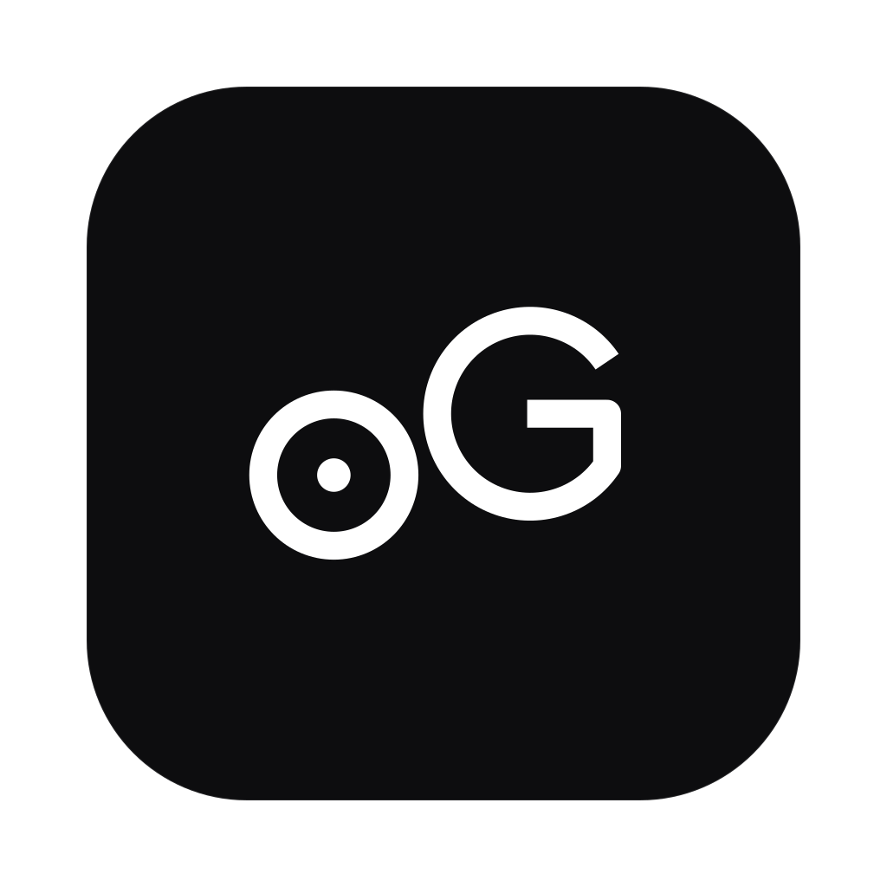

The point
Nothing here is
a wrapper.
The tokenizer, the architecture, the training loop, the inference — written from scratch and measured, not assumed. Each model is built to run on ordinary hardware, offline, and to end up inside Gzowo AI.
-
Own every layer
No fine-tuning of someone else’s weights. The tokenizer, the model, the training loop and the inference are ours, and legible all the way down. You can open the network while it runs and watch the attention fire.
-
Measured, not assumed
Every claim on this page has a number behind it — or it says plainly that it does not have one yet. A model that has been specified is labelled a spec. A model that has been written but not trained says so. The badges are not decoration.
-
Local, and heading home
Every model runs on the machine in front of you and lands inside Gzowo AI, the assistant they all report to. Today that assistant still leans on a hosted model for its voice. MicroG and Gedit are how that stops being true.
Where it's heading
Two models,
one destination.
MicroG and Gedit are not meant to stay separate demos. Both are built to end up inside Gzowo AI — MicroG as its voice, Gedit as its eyes. Neither has landed there yet.
MicroG

Gedit

Gzowo AI
Dashed = planned, not live. Nothing here claims a connection that doesn't exist yet.
Why they look related
One family,
one grid.
The three marks share a stroke weight, a baseline, an x-height and a descender. The G is not redrawn for each model — it is literally the same path, at the same radius, in the same place. Only the left glyph changes: µ for micro, a crop-mark for edit, an aperture for the assistant.
Stroke weight 15 · G centre 200,90 · radius 50 — identical in all three.
Benchmarks · MicroG
Every claim
has a number.
109,529,856
Parameters — counted, not rounded
8.95×
Faster with the KV-cache at a 900-token context — 1.4 → 12.1 tok/s
10.55 / 10.37
Loss at random init vs ln(32000). Lower would mean a target leak, not success
4.37
Characters per token on Polish
1.79e-06
Max logit delta, KV-cache vs none — identical sampled sequences
26–60%
Fewer tokens than GPT-2’s tokenizer across ordinary Polish sentences
Why a Polish tokenizer was worth building
The same phrase, split by each tokenizer. Every chip is one token.
Ours 6 tokens
Najmniejszywspólnymianownik
GPT-2 15 tokens
Najmniejszywspólnymianown…
At a 1024-token context, that is roughly twice as much Polish text in the same window.
Illustrative simulation, not a live model — it approximates the pattern from the measured example above.
Ours 6 tokens
GPT-2 15 tokens